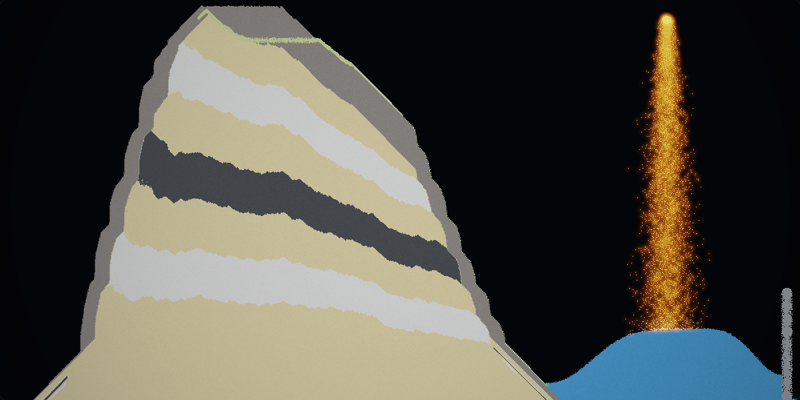
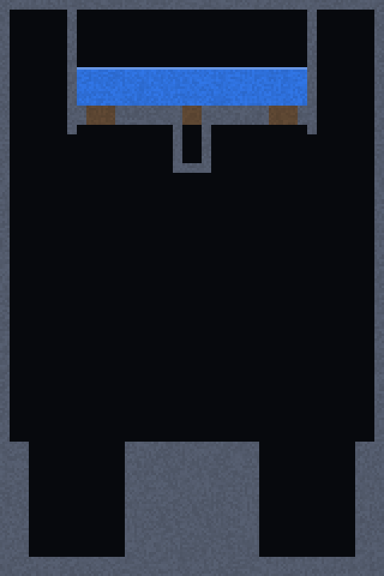
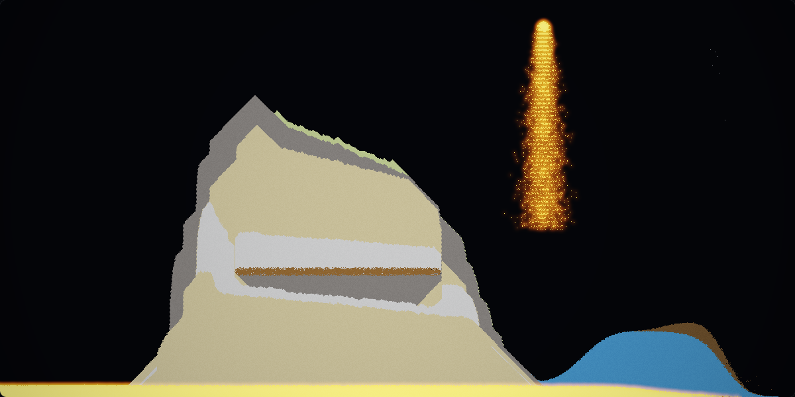
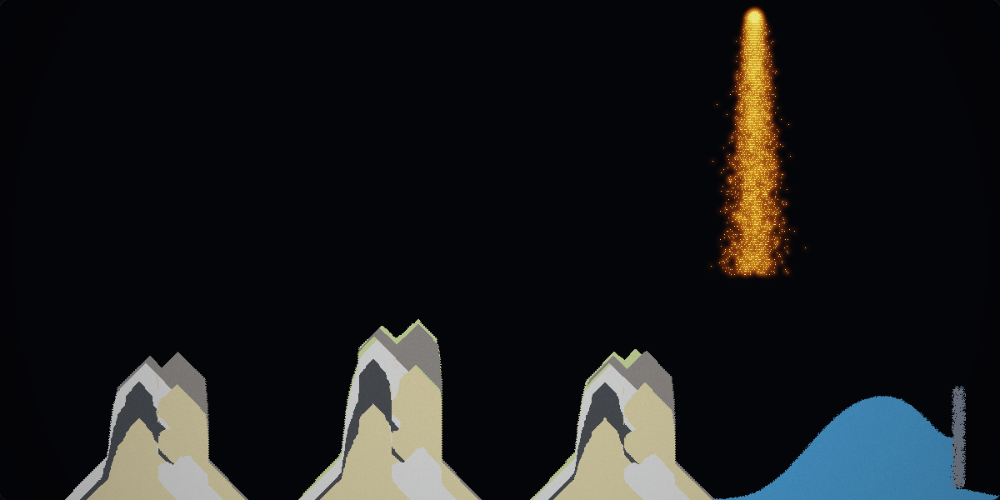
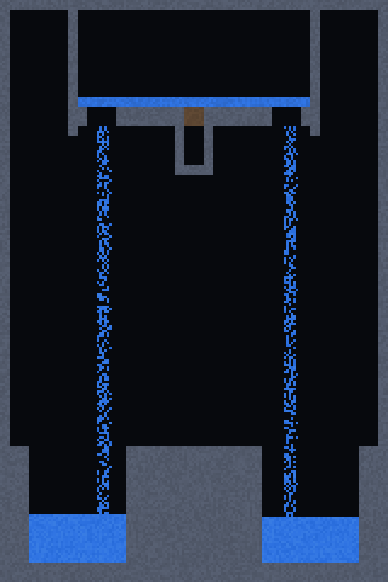
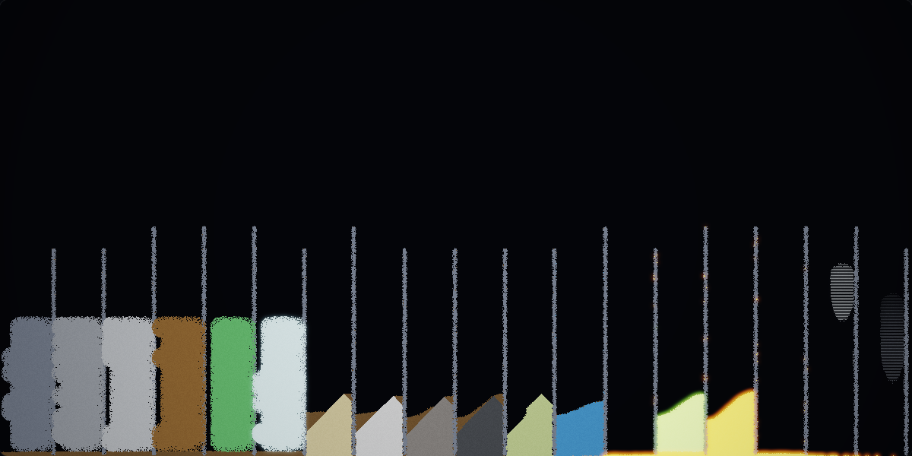

샌드랩 · Home 390 · v2 “Vitrine”
진짜 엔진 장면 · 2:1 정직한 우물 · 계기판 라벨 · Ember 1개
SANDLAB
No.42
06:12
Specimen 0381 · strata, lava
1200 × 600
Pour something.
See what it becomes.

drag to pour
0
300
600
900
1200
Sand
· grain 06 · 412,019 cells moving
All
18
Powder
5
Liquid
4
Solid
6
Gas
3
Erase
Share
Today
Daily No.42
World 1 · puzzle 3
Two Pots
Fill both pots with water.
Dig twice, then pour.
Par
2
moves ·
5.3
s
Gem
1

Solve today
06:12:40
until UTC 00:00
Your strata
5 days
On the wall
Browse

Shelf, slipping
sand, salt, wood · lava
3 remixes

Three peaks, one fire
sand, ash, gunpowder
1 remix
Notes
Materials
About
Privacy
Made by Piousangel · no install, no sign-up
설계 의도 · Home 390
정직한 우물
: 엔진 격자가 1200×600(2:1) 고정이라 모바일 우물도 2:1. v1의 세로 우물은 실제로 만들 수 없는 그림이었다. 안의 장면은 엔진 실캡처(층층이 부은 모래·소금·화약 + 용암 기둥).
계기판 문법
: 모든 메타 정보는 JetBrains Mono 10px 대문자 + 숫자 고정폭(SPECIMEN·눈금자·셀 수). 헤드라인만 Bricolage 38px, 2행은 ink-2로 낮춰 위계를 한 번에 만든다.
Ember는 한 곳
: 홈의 주 행동은 캔버스에 붓기 자체라 버튼이 아님. Ember는 데일리 ‘Solve today’ 하나. Share는 잉크 면 칩.
시험관 = 진짜 재료
: 관 안은 엔진 캡처 결. 선택하면 6~8px 들리고 마개(wood 재료색)가 기울어 열림, 아래 2px 잉크 표식. 오른쪽 끝이 잘려 가로 스크롤을 말한다.
붓 크기 = 알갱이 3개
: 기본 range 슬라이더(R4) 제거. 지층은 색 띠가 아니라 유리병 속 물결 단면 + 박물관식 지시선 캡션. 홈은 게임 화면이라 광고 0.
샌드랩 · Daily 결과 390 · v2 “Framing”
보드가 액자에 걸린다 · 캡션 카드 · 유리알 별
No.42
· Two Pots
Cleared
· 6.1 s

No.42
· World 1-3
Specimen 42-0381
Two Pots
water, dirt · 2 moves · 6.1 s
Clear · Gem ·
Par
Par missed by 0.8 s
+1 stratum
· water
6 days · vein at 7
Share framed
Try for 3
Next pour in
06:12
Play 2-1
설계 의도 · Daily 결과
판화 한 장
: 결과 = 벽에 걸린 액자. 걸이줄(1px)과 못 한 점만으로 ‘전시’ 문맥을 만든다. 보드는 2:3 Spill 격자 그대로.
박물관 캡션
: 번호·제목·재료·수치 순서의 캡션 카드. 같은 카드가 공유 이미지·갤러리 카드에 그대로 쓰인다(한 번 디자인, 세 곳 사용).
유리알 별
: 채운 알은 그날 주재료(물) 엔진 결로 채워지고, 빈 알은 투명 유리로 남아 ‘Try for 3’의 이유가 된다. 질책 문구 없음.
Ember 1개
: ‘Share framed’만 Ember. 재도전은 텍스트 버튼, 다음 레벨은 모노 링크.
주의
: 보드 속 물이 찬 모습은 /daily 초기 프레임을 브라우저에서 편집한 목업. 실제 클리어 프레임 캡처로 교체 필요.
샌드랩 · Home 1440 · v2 “Vitrine”
좌 시험관 선반 · 가운데 우물 · 우 오늘/지층 · 첫 화면 1440×900
SANDLAB
Pour
Solve
Browse
Notes
No.42
06:12:40
Specimen 0381 · strata, lava
1200 × 600 cells · WebGPU
Pour something.
See what it becomes.
0
300
600
900
1200
Sand
· grain 06 · 412,019 cells moving ·
E
erase ·
⌘Z
undo
Erase
Share
On the wall
Browse all
Shelf, slipping
3 remixes
Three peaks
1 remix

Eighteen jars
Sandlab pick
Today
No.42
World 1 · puzzle 3
Two Pots
Par
2
moves ·
5.3
s · gem
1
Solve today
Strata
5 days
11-19
water
11-18 sand
11-17 lava
11-16 —
11-15 salt
vein at 7 · 2 to go
설계 의도 · Home 1440
세 칸 전시
: 선반(재료) · 진열장(우물) · 안내판(오늘/지층). 회색 패널 없이 Bone 한 면 위에 Kiln 우물만 어둡다.
선반 = 키보드
: 18개 시험관을 4단(가루·액체·고체·기체)으로, 관마다 1~9·0 단축키 모노 표기. 도구 막대 한 줄(R1) 폐기.
우물이 주인공
: 872px 폭(실제 1200×600의 0.72배, 정수 배율 아님 — 구현 시 600·900·1200 중 맞는 폭 선택 권장). 도구는 우물 아래 오른쪽 4개로만.
Ember 1개
: 우측 ‘Solve today’. 내비는 3동사 + Notes, 활성은 2px 잉크 밑줄.